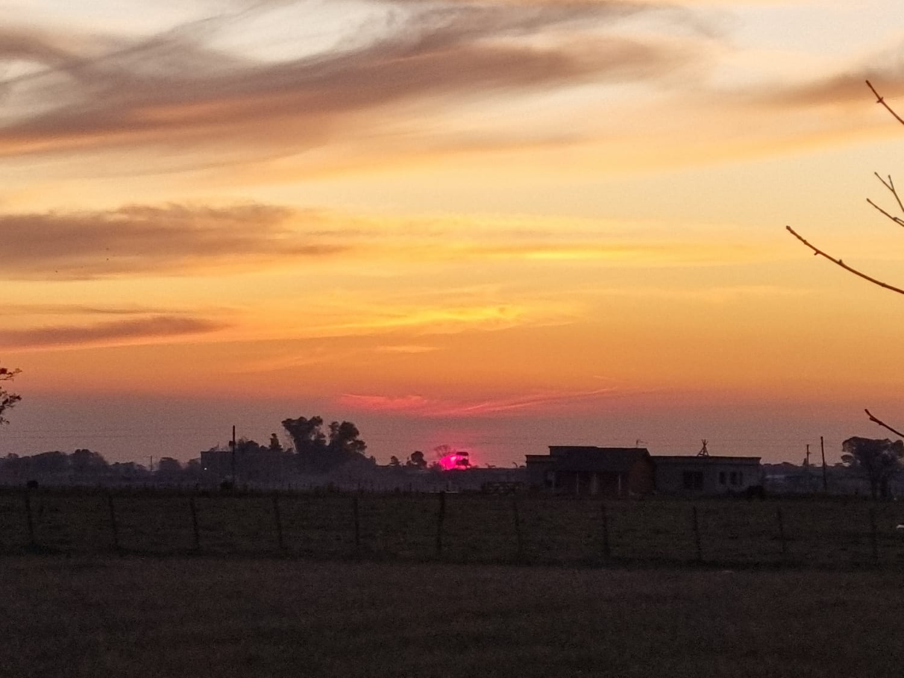

Sobre Nosotros
Somos una familia que se enamoró de un pueblo, Uribelarrea, donde nos instalamos. En él hallamos el contacto con la naturaleza que necesitábamos sin estar lejos de la ciudad. De ahí surgió la idea de un emprendimiento inicial de dos cabañas; priorizando la calidad y privacidad teniendo a unos metros un pueblo turístico que brinda una amplia variedad de gastronomía. También a unos pocos km del pueblo hallamos la Escuela Salesiana “Don Bosco” que ofrece los productos manufacturados por los propios alumnos de una calidad más que excelente. No podemos dejar de mencionar la feria artesanal como asimismo sus casas de té. También existen alquileres de bicicletas, cabalgatas y sulkys.
